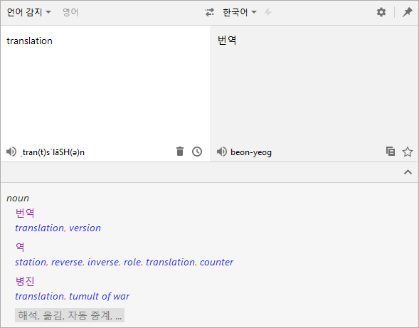
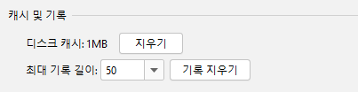
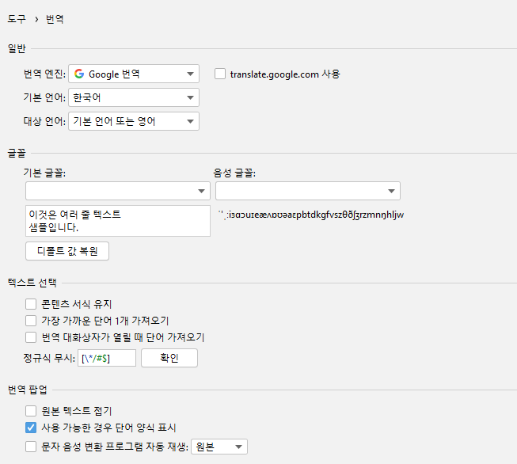

Translation v3.0을 사용해주셔서 감사합니다. 해당 버전에는 다음과 같은 주요 업데이트가 포함됩니다:
- 새로운 플러그인 로고 - 플러그인 로고의 새로운 디자인
- 새로운 사용자 인터페이스 - 새로운 번역 대화상자 및 설정 페이지 UI
- 더 많고 완전한 키보드 단축키 - 마우스?그게 뭐죠?
- 디스크 캐시 - 디스크 캐시 지원
이곳에서 해당 릴리스 노트를 확인하실 수 있습니다.
로고
우리는 플러그인에 대한 로고를 새롭게 디자인했습니다.

번역
번역 대화상자
번역 대화상자의 사용자 인터페이스를 다시 설계하여 번역 대화상자를 보다 간결하고 쉽게 사용할 수 있습니다.

키보드 단축키
우리는 번역 대화상자, 번역 팝업 및 기타 인터페이스에 많은 실용적인 단축키를 추가했으며, 이제 키보드를 사용하여 대부분의 작업을 수행 할 수 있습니다.
-
번역 대화상자 단축키:
- 소스 언어 목록 표시 - Alt + S
- 대상 언어 목록 표시 - Alt + T
- 언어 교환 - Alt + Shift + S
- 창 고정 상태 전환 - Alt + P
- TTS 재생 - Alt/Meta/Shift + Enter
- 단어장에 저장 - Ctrl Ctrl/Meta + F
- 지난 기록 표시 - Ctrl/Meta + H
- 번역 복사 - ctrl Ctrl + shift + C
- 입력 내용 지우기 - Ctrl/Meta + Shift + BackSpace/Delete
- 더 많은 번역 펼치기 - ctrl Ctrl + Down
- 더 많은 번역 접기 - Ctrl/Meta + UP
-
번역 말풍선 단축키:
- 대화상자로 열기 - Ctrl + Shift + Y / Control + Meta + U
-
빠른 문서 창 단축키:
- 자동 번역 켜기/끄기 - Ctrl + Shift + Y / Control + Meta + U
빠른 문서 번역
내용의 길이가 번역 가능 길이 제한을 초과하는 문서의 경우, 번역을 건너뛰고 알림이 표시됩니다:

디스크 캐시
이제 번역의 결과가 디스크에 캐시로 저장되고, 다음번에 동일한 번역을 캐시로부터 읽어옵니다.물론 설정 페이지에서 캐시를 삭제할 수 있습니다.

설정 페이지
설정 페이지의 사용자 인터페이스를 다시 배치했으며 이제 IDEA의 UI 스타일에 더 잘 부합합니다.또한 설정 페이지는 설정 > 도구 그룹으로 이동되었습니다. 찾지 못할까 봐 걱정할 필요는 없습니다. 이미 대화상자의 눈에 띄는 곳에 입구를 설정했으며 그곳에서 빠르게 설정 페이지를 열 수 있습니다.

감사합니다.
이 버전에 기여해주신 다음 분들께 감사드립니다.
- Nikolay Tropin(@niktrop)
- 알 수 없는 디자이너(@JetBrains): 플러그인의 새로운 로고PR #602